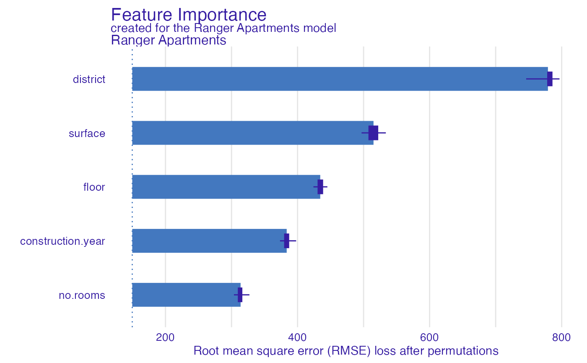

Dataset Level Variable Importance as Change in Loss Function after Variable Permutations
Source:R/model_parts.R
model_parts.RdFrom DALEX version 1.0 this function calls the feature_importance
Find information how to use this function here: https://pbiecek.github.io/ema/featureImportance.html.
model_parts( explainer, loss_function = loss_default(explainer$model_info$type), ..., type = "variable_importance", N = n_sample, n_sample = 1000 )
Arguments
| explainer | a model to be explained, preprocessed by the |
|---|---|
| loss_function | a function that will be used to assess variable importance. By default it is 1-AUC for classification, cross entropy for multilabel classification and RMSE for regression. Custom, user-made loss function should accept two obligatory parameters (observed, predicted), where |
| ... | other parameters |
| type | character, type of transformation that should be applied for dropout loss. |
| N | number of observations that should be sampled for calculation of variable importance. If |
| n_sample | alias for |
Value
An object of the class feature_importance.
It's a data frame with calculated average response.
References
Explanatory Model Analysis. Explore, Explain, and Examine Predictive Models. https://pbiecek.github.io/ema/
Examples
# \donttest{ # regression library("ranger") apartments_ranger_model <- ranger(m2.price~., data = apartments, num.trees = 50) explainer_ranger <- explain(apartments_ranger_model, data = apartments[,-1], y = apartments$m2.price, label = "Ranger Apartments")#> Preparation of a new explainer is initiated #> -> model label : Ranger Apartments #> -> data : 1000 rows 5 cols #> -> target variable : 1000 values #> -> predict function : yhat.ranger will be used ( default ) #> -> predicted values : No value for predict function target column. ( default ) #> -> model_info : package ranger , ver. 0.12.1 , task regression ( default ) #> -> predicted values : numerical, min = 1843.677 , mean = 3489.448 , max = 6223.559 #> -> residual function : difference between y and yhat ( default ) #> -> residuals : numerical, min = -458.813 , mean = -2.429105 , max = 567.1183 #> A new explainer has been created!model_parts_ranger_aps <- model_parts(explainer_ranger, type = "raw") head(model_parts_ranger_aps, 8)#> variable mean_dropout_loss label #> 1 _full_model_ 147.5241 Ranger Apartments #> 2 no.rooms 300.4211 Ranger Apartments #> 3 construction.year 373.7602 Ranger Apartments #> 4 floor 425.3204 Ranger Apartments #> 5 surface 524.6415 Ranger Apartments #> 6 district 791.7600 Ranger Apartments #> 7 _baseline_ 1204.7595 Ranger Apartments# binary classification titanic_glm_model <- glm(survived~., data = titanic_imputed, family = "binomial") explainer_glm_titanic <- explain(titanic_glm_model, data = titanic_imputed[,-8], y = titanic_imputed$survived)#> Preparation of a new explainer is initiated #> -> model label : lm ( default ) #> -> data : 2207 rows 7 cols #> -> target variable : 2207 values #> -> predict function : yhat.glm will be used ( default ) #> -> predicted values : No value for predict function target column. ( default ) #> -> model_info : package stats , ver. 4.0.4 , task classification ( default ) #> -> predicted values : numerical, min = 0.008128381 , mean = 0.3221568 , max = 0.9731431 #> -> residual function : difference between y and yhat ( default ) #> -> residuals : numerical, min = -0.9628583 , mean = -2.569729e-10 , max = 0.9663346 #> A new explainer has been created!logit <- function(x) exp(x)/(1+exp(x)) custom_loss <- function(observed, predicted){ sum((observed - logit(predicted))^2) } attr(custom_loss, "loss_name") <- "Logit residuals" model_parts_glm_titanic <- model_parts(explainer_glm_titanic, type = "raw", loss_function = custom_loss) head(model_parts_glm_titanic, 8)#> variable mean_dropout_loss label #> 1 _full_model_ 253.8955 lm #> 2 parch 253.8816 lm #> 3 fare 254.0323 lm #> 4 sibsp 254.5451 lm #> 5 embarked 254.9516 lm #> 6 age 256.6132 lm #> 7 class 263.5449 lm #> 8 gender 277.5341 lm# multilabel classification HR_ranger_model_HR <- ranger(status~., data = HR, num.trees = 50, probability = TRUE) explainer_ranger_HR <- explain(HR_ranger_model_HR, data = HR[,-6], y = HR$status, label = "Ranger HR")#> Preparation of a new explainer is initiated #> -> model label : Ranger HR #> -> data : 7847 rows 5 cols #> -> target variable : 7847 values #> -> predict function : yhat.ranger will be used ( default ) #> -> predicted values : No value for predict function target column. ( default ) #> -> model_info : package ranger , ver. 0.12.1 , task multiclass ( default ) #> -> predicted values : predict function returns multiple columns: 3 ( default ) #> -> residual function : difference between 1 and probability of true class ( default ) #> -> residuals : numerical, min = 0.001179166 , mean = 0.2803919 , max = 0.8955016 #> A new explainer has been created!model_parts_ranger_HR <- model_parts(explainer_ranger_HR, type = "raw") head(model_parts_ranger_HR, 8)#> variable mean_dropout_loss label #> 1 _full_model_ 380.3443 Ranger HR #> 2 gender 548.1090 Ranger HR #> 3 age 631.1497 Ranger HR #> 4 salary 675.5411 Ranger HR #> 5 evaluation 910.5031 Ranger HR #> 6 hours 1212.7714 Ranger HR #> 7 _baseline_ 2081.9681 Ranger HR# }